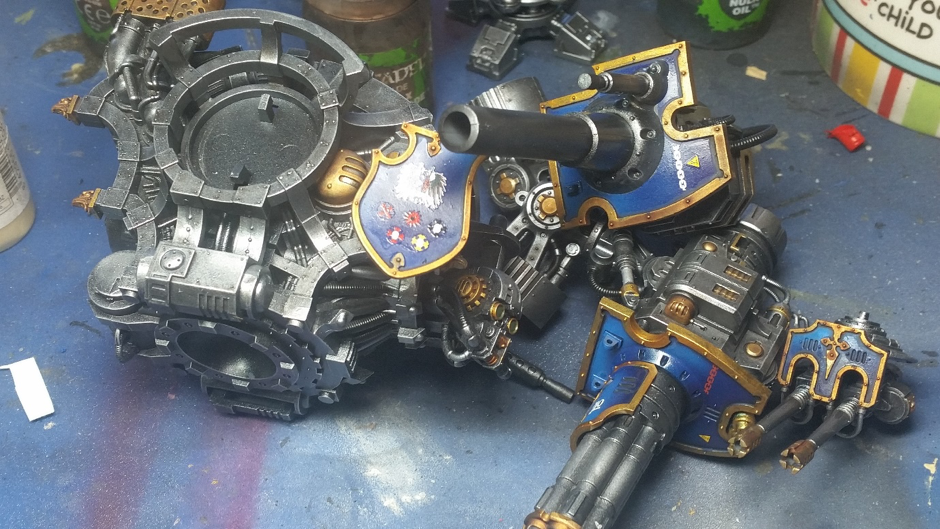

How I painted Stormcast Eternals
July 22, 2018 by John
Having painted up the Nighthaunt guys from the Soul Wars box set it was time to do the Stormcast chaps (and at least one chapess). These took considerably long than the Nighthaunt due to the metallic process and the sheer amount of detail on the models. I tried to photograph the whole procedure but there are gaps which I will fill in with the magic of words…
Firstly they were all basecoated with Vallejo grey primer and this was followed up with black primer on all the areas to be painted blue. The reasoning is that I’ve found that gold doesn’t go down well on the darker undercoat but blue lies nicely on black. I then painted all the retributory gold areas and washed with a nix of GW flesh wash and Agrax Earthshade resulting in the figures below.
Next it was time to bling up the gold using first retributory gold then increasing the amount of silver in the mix and successively diminishing the highlighted areas as per the familiar layer method.
Dark blue was then thin coated over the black undercoat areas. For me this was Vallejo Dark Prussian blue but any dark blue will do I guess. The black primer helps here to give a bit of depth.
At this point the models are starting to get interesting as the contrasts start appearing and you can see the finished item in your head. The painting is also starting to get more interesting as from here the work on the cloaks begins with white added to successive highlight layers and where necessary glazes of the original blue added to tone down over highlighting which can happen when painting all 20 figures at the same time. It is easy to overdo especially in less than perfect light.
With all the blue done and some edge highlights it was time to do the lighter surcoat arrangement. Just on edge highlights personally im a bit dubious on cloth as when I look around the real world I don’t see this except on leather type materials but I realise that in the miniature world it is an effect which looks good – in moderation.
Anyways the surcoats were painted Vallejo desert yellow which is very pigment and provides a strong base. My mix of flesh and agrax was then washed over before highlighting up through sand to ivory. Where the contrast was too great where the wash had pooled a thin glaze of ivory provided a bit of a moderating influence. The first picture below showing with desert yellow the next at the endpoint.
Second picture
The second picture also shows most of the rest of the base layers in place such as the hafts of weapons and the blacks of armour etc. From this point on it was mostly edge highlighting the black armour which I assume is some leather, metalling the weapons and tidying up any mistakes. The airbrush came out for the effect on the shields as seen below then it was onto basing.
Basing for models going on ebay is always a variation on a theme and nothing radical, sand on pva, then varnished with the rest of the figure to set. Then painted with Wilkos brown paint, drybrushed a couple of times and foliage added where appropriate. Premade base holes can be covered with the perfectly sized greenstuffworld skulls.
The completed collection can be seen on my flickr page HERE
Imperial knight Crusader
July 6, 2018 by John
Just completed a Knight Crusader which will be going up on ebay this Thursday. I tried to photograph at the end of each stage but to be honest I was less than thorough so what we have is about half the stages photographed…
The skeleton
Easy enough – the whole skeleton apparatus was sprayed with Vallejo gunmetal over a black undercoat. Used the modelcolour with flow improver as my model air gunmetal ran out. Nice and even spray though. All a bit flat though. I then painted a coat of Agrax Earthshade over the whole and once that was dry drybrushed with silver and airbrushed a few areas where the light would fall such as the tops of the leg joints and gun barrel tops.
Then to provide some interest and contrast some random decorative bits were picked out in brass which was itself washed with fleshwash and agrax mixed. This gives what I think is a pleasing look.
As can be seen in this sideways picture of a leg. Pistons were painted silver and nuln oil run into cracks and crevasses after a gloss varnish.
Meanwhile in another part of the galaxy the interesting bits were being painted…
The majority of the panels were painted off model and as the whole had to be House Terryn - as the only decals that came in the Original Renegades Knight only came with Terryn decals. Anyway that meant blue and some nice modulation on the panels. These are big enough for this to pack some punch as an effect. Vallejo blues were used. Once the blues were established it was time to mask off the completed work and get on with next stage, the red.

Masking is easy on these big models and is done by a mix of Tamiya masking and Vallejo fluid. Then the reds were applied.
The biggest pain after this is removing the latex masking fluid but once done its starting to look like something. The reality has more contrast than these photos and is increased by glazes and by edging after a solid gloss varnish.
I also did one of the shoulder guards in hazard stripes because of cool! This was easier than I imagined as I cut a thin straight strip of masking and put it down the middle on a diagonal. All the others were placed by eye as the curve made measuring difficult. The yellow was applied over a coat of sand which acts as a good base. It was then faded by adding a bit of a sandy colour to the yellow.
All the off model carapace parts were then put aside and those bits which couldn’t be painted off model were done. To stop any airbrush paint hitting the skeleton the mix of masking tape and fluid was supplemented by clingfilm and the whole modulation business repeated.
It’s a bit of a faff but works well as can be seen below taken at about three stages further after all the trim was painted, the whole glossed, nuln oil run into the cracks and crannies and even the decals added….

Similarly I forgot to snap the same stages on the armour plates which can be seen below after the same stages. I think I got carried away by the fun stages.
This shot shows the contrast much better as well as the wash on the gold edging which will need highlighting. I had no decal for the Terryn writing to go on the chestplate so was a bit wary of my freehand Gothic skills…
Fortunately this was not as difficult as I had imagined and it turned out reasonably well. Not perfect but pretty good. As a word of caution if you try this make sure you aren’t an idiot and do it upside down the first time as this can lead to a bruised forehead….you never stop learning!
Next is a picture of all the carapace parts after matt varnishing. While I realise enormous death robots aren’t going for camouflage I also don’t see them being painted in Dulux gloss and even if they were this dulls to matt in the weather.
The skeleton was not matt varnished to retain a more metallic feel. Then it was time to put it all together for the first time. As you can see this is a big boy, too big for my cheapo self-made photo booth.
I thought it might look cool next to its brother Gallant
So that’s it two imperial knights from the old Renegade Knights box and both up for sale on ebay. Kits went together perfectly and they were a pleasure to paint. I will get some better pictures up on my flickr page asap.
Alpha legion
July 1, 2018 by John
Following my recent experience painting Dark Angels I decided to paint up the other figures from the Dark Vengeance range, the Chaos Cultists, Helbrute and Chosen, as Alpha Legion. The Alpha Legion seem to me to be the most interesting of the traitor legions with their shadowy covert operator back story. In the fluff they work to foment rebellion and revolt throughout the empire undermining the traditional family values of the Emperor.
I had also heard on various podcasts that they were actually a pretty good faction rules-wise, using lots of misguided cultists who had bought into the idea that guns were good and big guns were better…
Anyway with a couple of Dark Vengeance lots, a few chaos marines, some bikes and some older Raptors I decided to go for an Alpha legion force in a fading dark blue to dark green style using the airbrush to fade from one to the other. This would hopefully get across the changeable nature of the legion itself. I started with the cultists to get my hand in and get the idea fixed. These are really nice models and I varied the skin tones as I’m pretty sure in the future not everybody is white.
In these wip pics they aren’t based but the final figures are as can be seen in the gallery. I have the cultists on 32mm for rule of cool but can change them if sold.
I was pretty pleased with these guys and liked the burnt barrel effects on the bigger guns. The close combat cultists were also clean to paint and I tried to keep the same theme going across the whole mob of 40.
Next up was the leader of the rabble rousers and I had an actual resin Dark Apostle which had come in some fantasy chaos stuff I had bought some time ago. This guy is the real deal for cultists apparently as he gives some benefits to them within the rules as well as looking cool.
So having sorted the meat shield I thought I should add a bit of brute force in the shape of a couple of Helbrutes. The larger panels on this model allowed more obvious shading from green to blue and I tried to make the darker demony bits in between look more organic by some less than subtle muscly striation – which I’m not so sure about.
Having got into the swing of things I now went for the Chosen and the HQ figures and these I think are least satisfactory for me as I didn’t realise quite how ridiculously baroque was their armour. Such was the amount of silvery ornamentation it sort of outshone the fading effect and left me feeling that perhaps a single stronger background colour might have been more effective such as the crimson used by GW. However I was now wedded to my theme and made the best of it. In my head were the conflicting ideas that covert operators par excellence probably eschewed so much baroque splendour as not easy to conceal in the shrubbery but at the same time remembering the Napoleonic soldiers who would wear their finest uniforms for battle to face death looking their best.
Which left the HQ man who in the Alpha Legion can be any character as they make it impossible to decapitate the actual leadership by disguising the real leader and also probably allowing a more devolved leadership, possibly a sort of Monty Python anarchist collective.
The actual non anarchist collective warlord! These models are great but I do wonder about practicalities in the 41st century as he has nowhere to carry his enormous sword or even a holster for his pistol. Perhaps the Alpha Legion are not the alpha and omega of efficient insurgency.